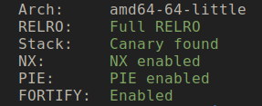
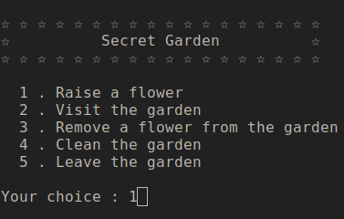
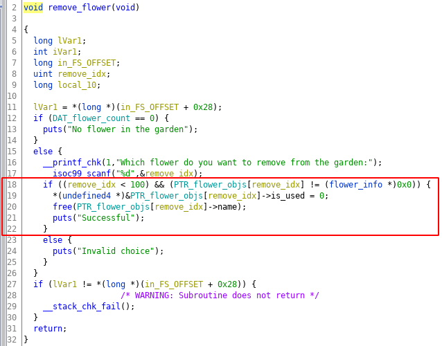
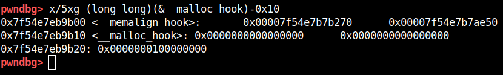
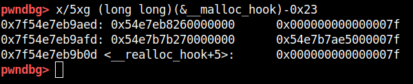
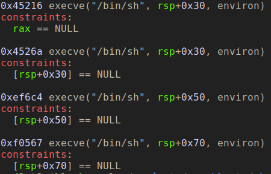
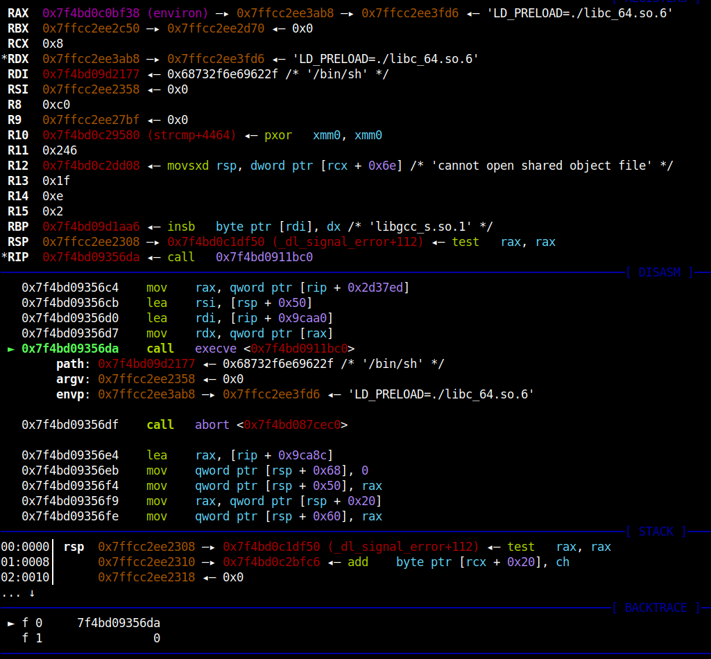
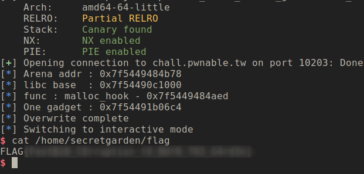

Binary Exploitation [pwnable.tw] - Secret Garden
Challange Description
| Name | Secret Garden |
| Points | 350 |
| Solves | 458 times |
| Libc | 2.23 |
| Category | Exploitation |
| Description | Find the flag in the garden |
We are provided with the libc binary used by challenge binary which will be used for calculate offsets of various symbols we need. The version of the libc is 2.23.
Binary Protection
Once you run a checksec on the binary you get the following results

Vulnerable Application

The application is pretty simple, you can create a flower object which is part of a garden. A flower object can be removed from the garden by first marking it as ready to freed and then by selecting clear the garden option you can free all the flower objects. The flower object is struct which looks like:
1 | struct flower { |
Let’s look at the functionality little more closely:
- Raise a flower: This creates the flower object using malloc request of size 0x28 and then prompts for the length of the flower name and then for flower name which is also allocated using malloc, this means we can control the malloc size. It then prompts for flower colour which is stored in the struct itself, colour has the fixed size of 24 bytes. There is a limit of creating 100 objects, the limit check is done every time before you create the flower object. The pointers of these flower objects are stored in the global array which can store 100 such pointers.
- Visit the garden: Displays all the flower name along with the colour. It only displays the objects which has the is_used field with value 1. So only the flower objects which are not ready to be freed.
- Remove a flower from the garden: It prompts the user for the index of the flower object you want to free. It then frees the name field of flower object and sets the is_used field to zero. But this functionality doesn’t free’s the flower object.
- Clean the garden: This functionality iterates the global flower object array and frees the objects which have is_used field set as zero.
- Leave the garden: Exit the program.
So let’s summarize the constraints of the application:
- You can control the name field’s allocation size and its content, this can help us to allocate a chunk which upon freeing can end up in malloc’s free bin of our choice.
- Remove a flower function free’s only the name memory chunk, this gives us the control which we discussed in the previous point. Since you can control the index of the object you are freeing we can do fastbin double-free attack.
- Visit the garden functionality can help to do the address leak, since it displays object so if we can manipulate the name memory chunk pointer we can leak some interesting addresses. But as PIE is enabled we have no way to leak GOT table or any other fixed known location. Alternatiively, we can also use unsorted bin chunk to leak libc address.
Vulnerability
Now let’s look at the vulnerable part of the code. Below is the code for Remove the flower function, there is a double-free vulnerability in the function which is highlighted in the image below.

The code checks if the object at the index is not null and if index is less then 100. If these conditions is satisfied it frees the name memory chunk and set the is_used field to zero. But if you try to free the same index again it doesn’t check the is_used field of the flower object before freeing the name memory chunk, this can lead to double-free vulnerability, this vulnerability can be used on fastbin memory chunk to create arbitrary write primitives.
The Leak - Read Primitive
Since the application has ASLR and PIE enabled we will have to do some address leaks to create a reliable exploit. A good target will be leaking the heap’s main arena struct address and, then use that address to calculate the libc base address. Let’s look at this method more detail.
Smallbin Leak
The attack is very simple we allocate chuck big enough so that when it is freed it will end-up in the unsorted bin. Since the unsorted bin is a doubly-linked list it stores the address fd, bk pointer of the next free unsorted bins, if it doesn’t have any memory chunk in its list it points to main arena’s bins array address. The first and last chunk of the unsorted bin has pointers to main arena struct. If we can read those pointers we can use it calculate the libc base address.
To carry out this attack we will create a flower object with name memory chuck of size 500 then we will free that name memory chunk. Then we raise another flower with name memory chuck size of 400, this will return the same chunk from unsorted bins. The first 8 bytes of the returned chunk has fd pointer and the next 8 bytes has bk pointer, we will only overwrite first 8 bytes since those bytes has null value as part of pointer address which can block it to print the entire content of the memory. Next, we will print all the flower objects using visit garden function and parse the printed content to get the main arena address. We can use that arena’s address to calculate the libc base by subtracting the offset from the arena struct, the offset value which we have to subtract is 0x3c3b78.
Below code execute the step described above.
1 | app.raise_flower(500, 'AAAAAAAAAAAAAAAA', 'AAAAAAAAAAAAAAAA') # idx 0 |
Above code will give you libc base address, using the base address and the libc binary provided in the challenge you can calculate the address of different symbols, like system, malloc_hook, free_hook, etc.
Write Primitive
The next step is figuring out how to overwrite the arbitrary address. For this, we will use Dup Fastbin attack. This attack trick the malloc to return arbitrary address. Below is the code which does the dup fastbin attack on the binary.
1 | def stage_write(write_addr, write_val, bin_size=100): |
But the next challenge is what address do we want to overwrite, and with what. A good target would be glibc’s __free_hook and __malloc_hook, these methods are called when we do malloc and free functions respectively. We can overwrite the address of this hook with our the shellcode address. So upon calling the malloc/free our shellcode will get triggered. But before doing that there is one more fastbin security check need to take care of, which is described in the next section.
Fastbin Security Check Bypass
If requested memory chuck can be fulfilled by fastbin, malloc removes the chunk from the fastbin and again calculates fastbin index in which the chunk should be placed. If the chunk cannot be placed back in the fastbin from which it was removed, then malloc throws “malloc(): memory corruption (fast)” error.
The fastbin index calculation is done using the size of the memory chunk. Below is the malloc code responsible for the check.
1 | if (__builtin_expect (fastbin_index (chunksize (victim)) != idx, 0)) |
To bypass this check we need to make sure the whatever address we wish to return from fastbin corruption it need to have a size such that it passes the constrain we just discussed(at -8 offset from the address we put in fastbin).
That been said, earlier we discussed two glibc free and malloc hooks, of the two option we can try to create fake chunk around __malloc_hook address because most of the memory around __free_hook was null(0). So lets inspect the malloc_hook address with gdb.

As you can see the chunk is at address 0x7f54e7eb9b10 and the size of the chuck is at address 0x7f54e7eb9b00 which has the value 0x7f54e7b7ae50 which is definitely not in fastbin range. But there is one neat trick which we can use to bypass the check, we can search the near-by memory location such that the size field we get is in fastbin range (which is max 0x80). This location is __malloc_hook-0x23 which you can as below.

We have changed the alignment of the chuck such that MSB of the size field is 0x7f and the rest of the bytes are 0. So effectively the size of the chuck is 0x7f which is in the fastbin range. So placing __malloc_hook-0x23 in freelist will bypass the security check and will return as address near __malloc_hook. With carefully calculated payload we can be overwritten __malloc_hook with the shellcode address. Below is the code for what we just discussed
1 | malloc_hook = p64(libc_bin.sym['__malloc_hook'] - 0x23) |
So at this stage we have both read and write primitives.
Exploit Shellcode
Next challenge is we have to figure out the shellcode. Since NX is enabled we will have to find a ROP gadget. The current constraints of the binary remain me of an interesting tool suggested by a friend which does one-shot code execution.
One Gadget
one_gadget is tool lets you search for single jump shellcode will leads to call to execve(‘/bin/sh’, NULL, NULL). This perfectly makes sense in our case. Using this tool is very simple, one_gadget <binary> and below is the output of offset where those gadgets can be found. It also prints certain constraints which you need to satisfy to make the gadget work. Below is the output for the libc provided in the challenge.

I tried the different offset but 0xef6c4 seems to be working. The constraints can be satisfied by doing double-free on same flower object. Below is the gdb breakpoint on the execve on the function.

Exploit
Below is the full working exploit
1 |
|

Conclusion
An interesting challenge on leaking libc via unsorted bins and getting arbitrary write using fastbin corruption.